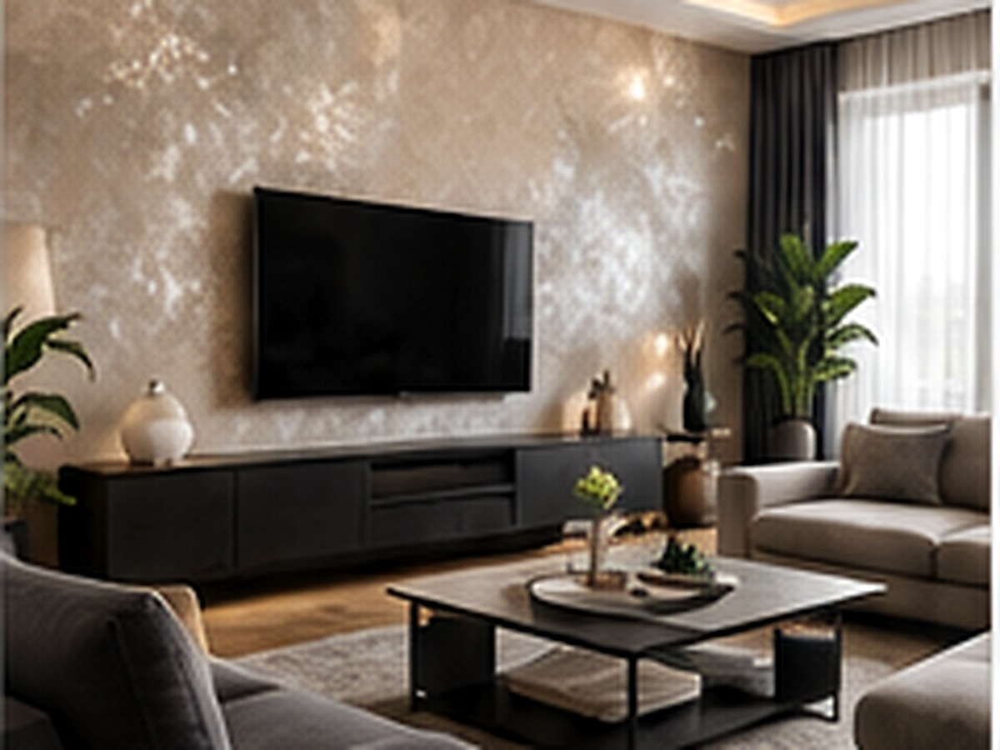

Najlepsze dopasowanie
DECOMAL STAR
Zdjęcie poglądowe realizacji
Wybierz pomieszczenie, styl i metraż. Doradca wskaże najlepszy produkt, właściwy podkład, zabezpieczenie, narzędzia oraz orientacyjną ilość materiału.

Doradca zawęża wybór do rozwiązań, które mają sens w konkretnych warunkach — zamiast pokazywać setki podobnych produktów.
Zdjęcia realizacji i wizualizacje są inspiracją. Rzeczywisty kolor i strukturę produktu zawsze potwierdź próbką w swoim oświetleniu.
Obliczenie orientacyjne na podstawie podanego metrażu.
To jest lista technologiczna, a nie przypadkowe produkty dodatkowe.
Lista jest dopasowana do wybranego produktu, podłoża i techniki pracy.
Doradca łączy rekomendację zakupową z praktycznymi poradnikami DECOWANT dotyczącymi podłoża, aplikacji i zabezpieczenia.
W łazience, kuchni czy na trudnym podłożu estetyka nie może wyprzedzać technologii. Dlatego Doradca odrzuca systemy niedopasowane do warunków.